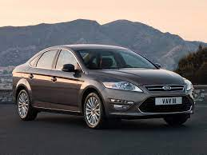
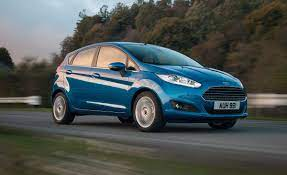

Ford
Brand History
The company was founded in Detroit in 1903 by Henry Ford, who created it after receiving $28,000 from five investors to develop the business.
Immediately after the company's creation, car inventor George Selden sued it, claiming Ford was infringing his patent; in 1911 a court invalidated Selden's patent.
Ford's first automobile was the Model A, with 1,708 produced in its first year. In August 1904 a plant was opened in Canada, and in 1908 the first overseas sales office was opened in Paris.
The first mass-produced model produced by the company was the Ford Model T, produced between 1908 and 1927; 10,000 were produced in 1909 alone, and 15 million in all years.
Ford gained fame as the first in the world to use the classic car assembly line, first launched in 1913. The use of the assembly line reduced the price of the Ford Model T from $950 in 1909 to $290 in 1926.
Ford Motor was ranked 22nd among the largest U.S. companies by revenue in 2022 (Fortune 500 list)
and 53rd among the largest companies in the world (Fortune Global 500 list). Ford Motor was ranked 60th on the Forbes Global 2000 list of the world's largest public companies for 2022.
Ford Mondeo 4 (2010)
The Ford Mondeo 4, also known as the Ford Fusion in North America, is a mid-size car that was first introduced in 2010.
This model is available as a four-door sedan or a five-door hatchback, and it has a sleek and stylish design.
Under the hood,
the Ford Mondeo 4 offers a range of petrol and diesel engines, including a 1.6-liter EcoBoost engine, a 2.0-liter Duratorq
TDCi engine, and a 2.3-liter Duratec engine. These engines deliver solid performance and fuel efficiency,
making the Ford Mondeo 4 a great choice for drivers who want a balance of power and efficiency.
Inside, the Ford Mondeo 4 offers a spacious and comfortable cabin, with plenty of legroom and headroom for passengers.
It also comes with a range of features and amenities, including air conditioning, power windows, a CD player, and a multifunction steering wheel.
Overall, the Ford Mondeo 4 is a reliable and stylish mid-size car that offers a great balance of performance, efficiency, and comfort.
Whether you're commuting to work or taking a road trip, the Ford Mondeo 4 is a solid choice that won't disappoint.
Customer Reviews
Bill

I was impressed with the Ford Mondeo 4's sleek exterior design and range of engine options.
While some of the interior materials felt cheap, overall it's a solid mid-size car that offers good value for the price.
Mike

As someone who doesn't know much about cars, I was pleasantly surprised by the Ford Mondeo 4.
It looked stylish, felt comfortable to sit in, and drove smoothly
Ford Fiesta 1.0 (2015)
The 2015 Ford Fiesta 1.0 is a subcompact car that offers impressive fuel efficiency and fun-to-drive handling.
It's available in both sedan and hatchback body styles, and it's a popular choice for city driving and commuting.
Under the hood, the 2015 Ford Fiesta 1.0 comes with a turbocharged 1.0-liter three-cylinder engine that produces
up to 123 horsepower. This engine delivers smooth and responsive performance, and it's mated to a five-speed manual
transmission as standard, with a six-speed automatic transmission available as an option.
Inside, the 2015 Ford Fiesta 1.0 offers a well-designed and comfortable cabin, with a range of features and amenities,
including a 6.5-inch touchscreen display, Bluetooth connectivity, and a rearview camera. There's also plenty of cargo space,
with up to 14.9 cubic feet in the sedan and 14.9 cubic feet in the hatchback.
Overall, the 2015 Ford Fiesta 1.0 is a great choice for drivers who want a fuel-efficient and fun-to-drive subcompact car.
With its responsive handling, well-designed cabin, and range of features, the Ford Fiesta 1.0 is a solid choice that won't disappoint.
Customer Reviews
Bob
As someone who bought the 2015 Ford Fiesta 1.0, I have to say that I was disappointed with the car's overall performance.
While it's certainly fuel-efficient and handles well, the engine can feel underpowered at times, especially when driving on the highway.
Additionally, the cabin can feel cramped and the ride can be rough, which makes longer trips uncomfortable.
Denny
Good car for its price